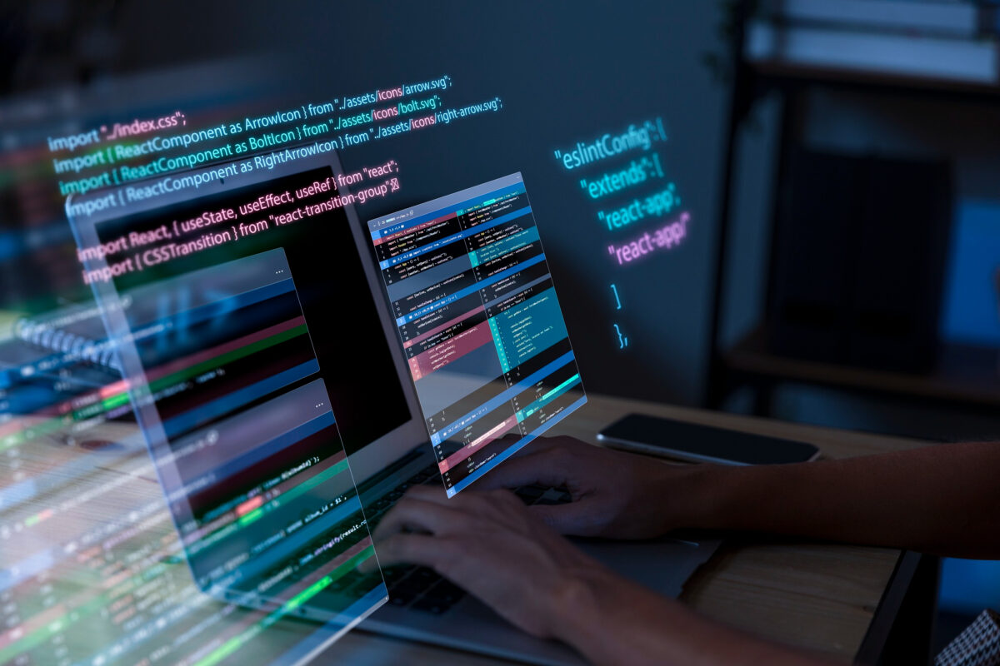

Introdução
A programação está presente em praticamente tudo o que usamos hoje em dia. Do celular que carregamos no bolso até os sites que acessamos diariamente, tudo depende de linhas de código escritas por programadores. Até mesmo objetos do cotidiano, como uma cafeteira inteligente que decide quando aquecer a água, só funcionam porque alguém desenvolveu o software por trás dela. Programar não é apenas escrever comandos, mas sim transformar ideias em realidade.
Trabalhar com programação significa lidar com tecnologia de forma criativa e prática. Ela permite resolver problemas, automatizar tarefas e trazer soluções inovadoras. Em um mundo cada vez mais digital, aprender programação se tornou uma habilidade essencial e um diferencial competitivo gigantesco para quem deseja crescer profissionalmente.

Programação em outras áreas
A programação não se restringe apenas à área de tecnologia, ela está presente em diversos outros setores. Na medicina, por exemplo, softwares auxiliam médicos a interpretar exames e prever diagnósticos. Já na educação, aplicativos personalizados ajudam estudantes a aprender de maneira mais interativa e eficaz. Esses exemplos mostram como a programação se mistura com várias áreas, trazendo avanços importantes para a sociedade.
No entretenimento, a programação é fundamental para o desenvolvimento de jogos, filmes e produções digitais, criando efeitos visuais e mecânicas complexas. Além disso, nas empresas, ela se torna uma ferramenta poderosa para automatizar tarefas, analisar dados e melhorar a tomada de decisões. Assim, a programação vai além dos computadores e se conecta com praticamente todas as áreas de nossas vidas.
Salário de programadores
Uma das perguntas mais comuns para quem pensa em entrar na área é: a programação dá dinheiro? A resposta é sim, e muitas vezes muito bem. No Brasil, um programador júnior pode ganhar entre R$ 2.000 e R$ 4.500 por mês. Já os desenvolvedores plenos costumam receber de R$ 5.000 a R$ 8.000 ou até mais, dependendo da empresa e da especialidade.
Profissionais sêniores, com maior experiência, podem ultrapassar facilmente os R$ 12.000 mensais. Além disso, há a possibilidade de trabalhar para empresas estrangeiras, recebendo em dólar, o que aumenta ainda mais o potencial de ganhos. Portanto, a carreira em programação oferece ótimas oportunidades de crescimento e salários atrativos para quem investe no aprendizado.

Conceitos básicos de programação
Antes de começar a programar, é importante entender alguns conceitos fundamentais. As variáveis, por exemplo, funcionam como caixinhas que guardam valores. Já a lógica de programação consiste em pensar passo a passo para resolver problemas, de forma organizada e estruturada. Outro ponto essencial é diferenciar o front-end, que é a parte visível de um site ou aplicativo, do back-end, que é a parte que funciona nos bastidores.
Além disso, o conceito de algoritmo é central para qualquer programador. Ele pode ser comparado a uma receita de bolo, onde cada passo é seguido até se chegar ao resultado final. Esses conceitos básicos formam a base para aprender qualquer linguagem de programação e são essenciais para construir soluções mais complexas no futuro.
Principais Linguagens para Iniciantes
Para quem está começando, algumas linguagens são mais indicadas por serem simples e terem bastante suporte da comunidade. O Python é uma das mais recomendadas, pois é fácil de aprender e muito usado em várias áreas. Já o JavaScript é essencial para quem deseja criar páginas dinâmicas e interativas na web. HTML e CSS, apesar de não serem linguagens de programação completas, são fundamentais para estruturar e estilizar sites.
C e Java também são boas opções, principalmente para quem deseja compreender conceitos mais profundos da programação. Elas exigem mais dedicação, mas oferecem uma base sólida que pode ser útil em projetos complexos. Assim, o iniciante pode escolher a linguagem que mais se encaixa com seus objetivos e evoluir gradualmente.
Primeiros Passos
O primeiro passo para aprender programação é escolher uma linguagem simples, como o Python. Em seguida, é recomendado instalar uma ferramenta para escrever códigos, como o Visual Studio Code. Com isso pronto, o próximo desafio é criar seu primeiro programa, geralmente o clássico 'Olá, Mundo!'. Esse pequeno exercício ajuda a entender a estrutura básica de um código.
Depois disso, a prática constante é essencial. Resolver pequenos desafios e projetos ajuda a fixar o aprendizado e ganhar confiança. A cada passo, o programador iniciante vai se acostumando com a lógica da programação e ganhando experiência para enfrentar projetos maiores e mais complexos.

Boas Práticas e Ferramentas
Manter um código organizado é fundamental para evitar confusão e facilitar futuras manutenções. Algumas boas práticas incluem usar nomes claros para variáveis, salvar versões do projeto no GitHub e sempre revisar o código para corrigir possíveis erros. Essas atitudes ajudam a criar projetos mais limpos e fáceis de entender.
Além disso, é importante continuar aprendendo e se atualizando sempre. A tecnologia muda rapidamente e novas ferramentas surgem a todo momento. Estar atento a essas mudanças e adotar bons hábitos desde o início da jornada garante que o programador cresça com qualidade e segurança em sua carreira.
Recursos Extras
Existem muitos recursos gratuitos disponíveis para quem deseja acelerar o aprendizado em programação. Sites como W3Schools e FreeCodeCamp oferecem tutoriais práticos e fáceis de seguir. Além disso, participar de comunidades em plataformas como Discord e Reddit pode ser uma excelente forma de trocar experiências e tirar dúvidas.
Criar pequenos projetos também é uma ótima maneira de praticar o que foi aprendido. Buscar ajuda de colegas ou mentores pode encurtar o caminho e evitar frustrações. O mais importante é nunca parar de praticar e explorar novas áreas dentro da programação, pois essa é a chave para evoluir constantemente.
Exemplos de linguagens de Programação:

Python é uma linguagem de uso geral, orientada a objetos e de alto nível, que é amplamente utilizada em diversas áreas: Desenvolvimento web, Ciência de dados, Machine learning (ML), Computação gráfica, Automação. é uma linguagem popular entre os desenvolvedores por ser fácil de aprender, eficiente e versátil.

Java é uma linguagem de usada para criar aplicativos e softwares para diversos dispositivos e sistemas operacionais, como computadores, celulares e dispositivos IoT.É versátil, multiplataforma, orientada a objetos e centrada em rede. É considerada rápida, segura e confiável, sendo utilizada por grandes empresas como Google, Amazon, YouTube e X (ex-Twitter).

JavaScript é uma linguagem que surgiu como uma tecnologia do lado do navegador para tornar as aplicações Web mais dinâmicas. Ao usar JavaScript, os navegadores passaram a ser capazes de responder a interações do usuário e alterar o layout do conteúdo na página

C# ou Csharp é uma linguagem de programação multiparadigma, criada pela Microsoft em 2000, e é a principal linguagem da plataforma .NET. É uma linguagem versatil orientada a objetos, com sintaxe baseada no C++, mas que também incorpora influências de outras linguagens, como o Java e o Object Pascal.. Alguns dos usos mais importantes da linguagem são: Desenvolvimento de aplicativos da Web, Desenvolvimento de jogos, Aplicativos de fluxo de trabalho, Serviços do Windows e internet das coisas (IOT)
Conhecimento Extra

Livros
Livros, para adquirir conhecimentos sobre linguagens de programação, algoritmos, desenvolvimento web e muito mais.
AcessarVídeos
Vídeos explicativos e didáticos para aprender programação, com exemplos práticos e linguagem simples, Além de um guia completo que explica qual o melhor passo a passo, para iniciantes seguirem no próprio ritmo
Acessar
Aplicativo Dev
Aplicativo que se assemelha a um jogo, onde cada fase você aprende codigos e lógica de programação.
AcessarCursos Gratuitos

Cursos gratuitos
Este link contém um imenso arsenal de cursos para quem deseja aprender e aperfeiçoar suas habilidades de programação (É recomendado assistir primeiro ao video para entender qual melhor passo a passo para programar).
Acessar